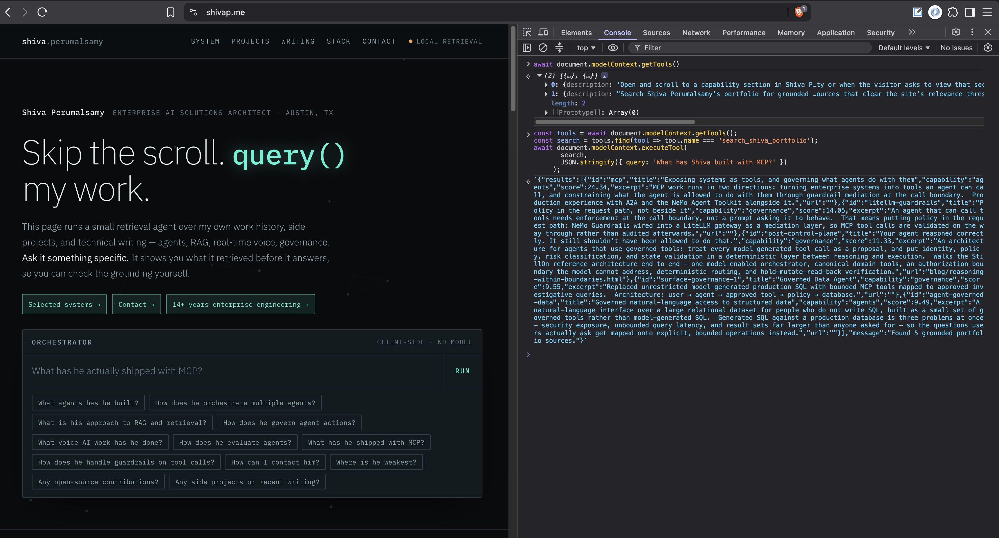

Imagine asking an agent to find a flight. On a normal travel site, it has to read the page, work out which fields mean origin, destination, dates, and passengers, operate a date picker, find the search button, and interpret the results. It can do that—but it has to learn the interface before it can use the capability behind it.
WebMCP changes the contract. A page can declare a typed capability such as find_available_flights({ origin, destination, departure_date }), along with the code that fulfils it. The agent does not need to scrape the DOM or guess what a button means; it can call the capability directly.
That is the idea I wanted to try on my own site, where the capability is much smaller: search_shiva_portfolio({ query }).
What is WebMCP?
MCP—the Model Context Protocol—is commonly used to connect a model to external systems and backend capabilities. WebMCP brings a related idea to the browser: a website exposes application capabilities as typed, callable tools.
WebMCP is still an emerging browser standard, but the architectural idea is worth testing now. It is a progressive enhancement: the normal human site does not disappear; the page simply becomes more explicit for an agent that supports the API. The agent receives a tool name, a description, and a JSON Schema instead of having to reverse-engineer the DOM.
shivap.me as a small demo
I recently added a small WebMCP experiment to shivap.me. The page now exposes two agent-facing tools: search_shiva_portfolio(query) for grounded portfolio search and open_shiva_portfolio_section(section) for direct navigation. The implementation was only a few lines wrapped around capabilities already running on the page. The architecture behind it is the interesting part.
Ask an agent, “What has Shiva built with MCP?” Without WebMCP, it can open the site, locate the search field, enter the question, find Run, click it, and interpret the result. That works, but the textbox is not the capability. The capability is: search Shiva’s portfolio for grounded evidence.
Now the agent can discover and invoke the tool directly:
const tools = await document.modelContext.getTools();
const search = tools.find(tool => tool.name === 'search_shiva_portfolio');
const result = await document.modelContext.executeTool(
search,
JSON.stringify({ query: 'What has Shiva built with MCP?' })
);The tool reuses the same client-side retrieval path as the human UI: query expansion, relevance scoring, and a threshold that drops weak matches. It returns a source id, title, capability, score, excerpt, and link for each match—not a second, hardcoded search index and not a scrape of the rendered page.
{kind=link}

Expose capabilities, not clicks
The screenshot shows the useful pattern: one underlying application capability, two interfaces. On the left, a person asks through the search box. On the right, an agent discovers and calls a structured tool on the same page. WebMCP is the interface to the capability; retrieval is still doing the knowledge discovery.
This distinction matters beyond portfolio search. A booking site can expose find_available_flights. A support site can expose find_account_help. A complex date-picker does not need to be interpreted as a grid of ambiguous buttons if the site can expose select_date.
That is not about removing the human interface. It is about giving agents an interface designed for the job: intent, typed input, structured execution, and a result that can be checked.
Make the tool boundary governable
Read tools are the easy beginning. The more consequential case is an agent that can change state: send a message, submit an application, change an order, or trigger a workflow. At that point WebMCP should not be treated as a shortcut around controls. It should become another boundary where controls are enforced.
That is the same argument I made in Your agent reasoned correctly. It still shouldn’t have been allowed to do that. Whether the tool arrives through MCP or WebMCP, consequential actions should still cross a governed control layer that enforces identity, authorization, policy, state validation, idempotency, audit, and human approval where required.
In other words: the agent can reason freely, but the system decides which actions are valid now, for this user, against this state.
How this gets evaluated
WebMCP also gives teams a cleaner evaluation surface. Browser automation is likely to become hybrid: use a structured WebMCP tool when a site exposes one, then fall back to browser interaction when it does not. A browser harness such as Playwright can still test the human flow, while a tool-aware harness can separately assert that the right tools register, schemas reject bad arguments, read tools return grounded results, and write tools stop for confirmation or policy checks.
That is more useful than judging whether an agent happened to click through a page successfully. It lets us measure tool selection, parameter accuracy, policy enforcement, and the trace of the action itself.
For now, this is a small experiment, but the architectural direction is interesting: agents should not have to crawl an interface to discover a capability—and exposing a capability should never mean giving up control of it. WebMCP gives us an agent-facing web. Governance determines whether we can trust agents to use it.